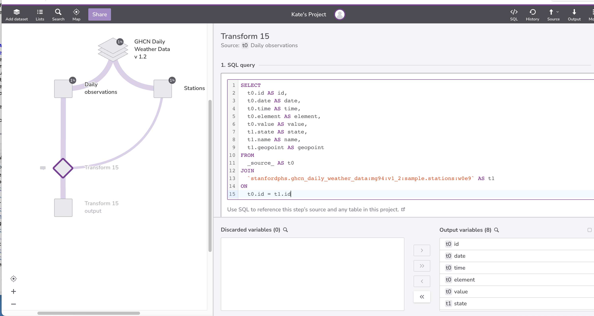
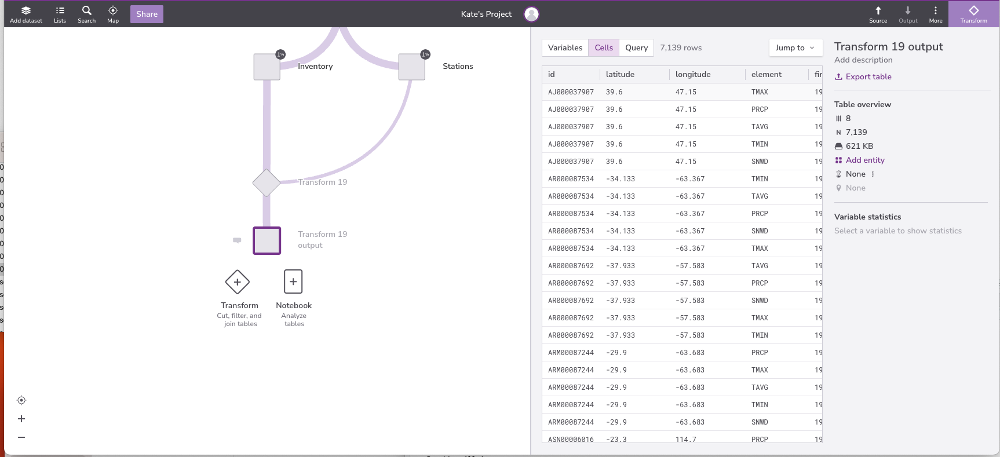
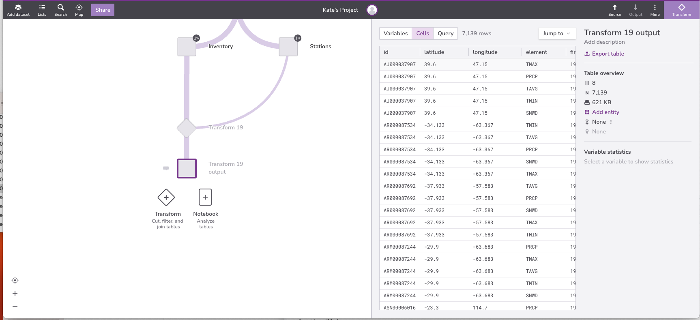

Combining Data
Last updated on 2023-10-10 | Edit this page
Estimated time: 40 minutes
Overview
Questions
- How can I combine data from multiple tables?
Objectives
- Explain the operation of a query that joins two tables.
- Explain how to restrict the output of a query containing a join to only include meaningful combinations of values.
- Write queries that join tables on equal keys.
- Explain what primary and foreign keys are, and why they are useful.
In order to submit our data to a web site that aggregates historical
meteorological data, we need to format it as a table with the columns
date, time, name,
state, geopoint, element and
value.
However, name, state and
geopoint are in the Stations table, while
date, time, element and
value are in the Daily observations table. We
need to combine these tables somehow.
The SQL command to do this is JOIN.
JOIN creates the cross product of two tables.
Let’s look at the skeleton of a JOIN query:
SQL
SELECT
[variables]
FROM
[table 1]
JOIN
[table 2]
ON
[common field]We want to join Daily observations
(_source_) with Stations
(stanfordphs.ghcn_daily_weather_data:mg94:v1_2:sample.stations:w0e9).
For clarity, we give our tables the aliases t0 and
t1.
SQL
SELECT
[variables]
FROM
_source_ AS t0
JOIN
`stanfordphs.ghcn_daily_weather_data:mg94:v1_2:sample.stations:w0e9` AS t1
ON
[common field]Next, we must choose field(s) on which to join our two tables. We
will join our tables ON the id field.
SQL
SELECT
[variables]
FROM
_source_ AS t0
JOIN
`stanfordphs.ghcn_daily_weather_data:mg94:v1_2:sample.stations:w0e9` AS t1
ON
t0.id = t1.idFinally, we select the variables we would like in our output. Notice
that we used Table.field to specify field names in the
output of the join. We do this because tables can have fields with the
same name, and we need to be specific which ones we’re talking about. We
have also given our selected variables more human-friendly names using
the AS operator.
SQL
SELECT
t0.id AS id,
t0.date AS date,
t0.time AS time,
t0.element AS element,
t0.value AS value,
t1.state AS state,
t1.name AS name,
t1.geopoint AS geopoint
FROM
_source_ AS t0
JOIN
`stanfordphs.ghcn_daily_weather_data:mg94:v1_2:sample.stations:w0e9` AS t1
ON
t0.id = t1.idHere is what our query and output look like in Redivis:

If joining two tables is good, joining many tables must be better. In
fact, we can join any number of tables simply by adding more
JOIN clauses to our query, and more ON tests
to filter out combinations of records that don’t make sense:
SQL
SELECT
t0.id AS id,
t0.date AS date,
t0.time AS time,
t0.element AS element,
t0.value AS value,
t1.id AS foreign_id,
t1.state AS state_code,
t1.name AS name,
t1.geopoint AS geopoint,
t2.name AS state_name
FROM
_source_ AS t0
JOIN
`stanfordphs.ghcn_daily_weather_data:mg94:v1_2:sample.stations:w0e9` AS t1
ON
t0.id = t1.id
LEFT JOIN
`stanfordphs.ghcn_daily_weather_data:mg94:v1_2.states:akcp` as t2
ON
t1.state = t2.code

In the above query, we join Daily observations with
Stations with States. Our output contains some
(but not all) of the variables included in each source table. Notice
that for the second JOIN, we use LEFT JOIN. By
doing this, we are asking the database:
Join on
Stations.state=States.code(these should both be two-letter abbreviations for state name)If a value of
Stations.statedoes not have any matches amongStates.code, return the valueStations.stateandStates.codeasnull.

Types of JOINS
There are several variations of JOIN. For more
information, check out the W3 Schools SQL
Tutorial. Note that a plain JOIN is equivalent to
INNER JOIN. A good visual explanation of joins can be found here
We can tell which records from Daily observations,
Stations and States correspond with each other
because those tables contain primary keys and foreign keys. A primary key is a
value, or combination of values, that uniquely identifies each record in
a table. A foreign key is a value (or combination of values) from one
table that identifies a unique record in another table. Another way of
saying this is that a foreign key is the primary key of one table that
appears in some other table.
Most database designers believe that every table should have a well-defined primary key. They also believe that this key should be separate from the data itself, so that if we ever need to change the data, we only need to make one change in one place.
SQL
SELECT
t0.id,
t0.latitude,
t0.longitude,
t0.element,
t0.firstyear,
t0.lastyear,
t1.name,
t1.state
FROM
_source_ AS t0
JOIN
`stanfordphs.ghcn_daily_weather_data:mg94:v1_2:sample.stations:w0e9` AS t1
ON
t0.id = t1.id 

Key Points
- Use JOIN to combine data from two tables.
- Use table.field notation to refer to fields when doing joins.
- Every fact should be represented in a database exactly once.
- A join produces all combinations of records from one table with records from another.
- A primary key is a field (or set of fields) whose values uniquely identify the records in a table.
- A foreign key is a field (or set of fields) in one table whose values are a primary key in another table.
- We can eliminate meaningless combinations of records by matching primary keys and foreign keys between tables.
- The most common join condition is matching keys.